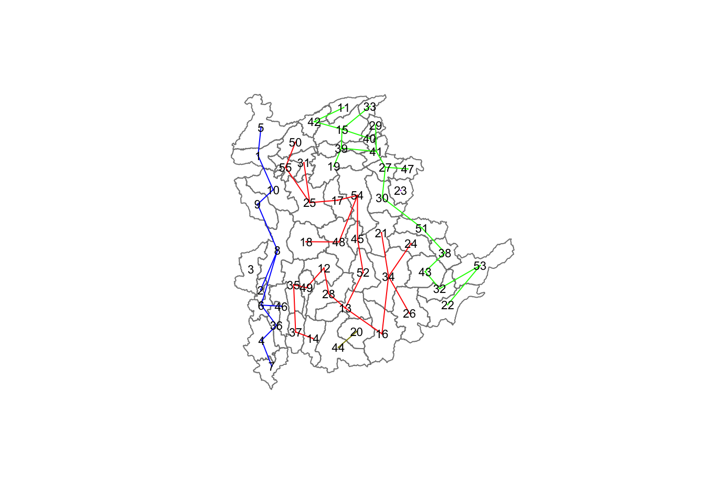
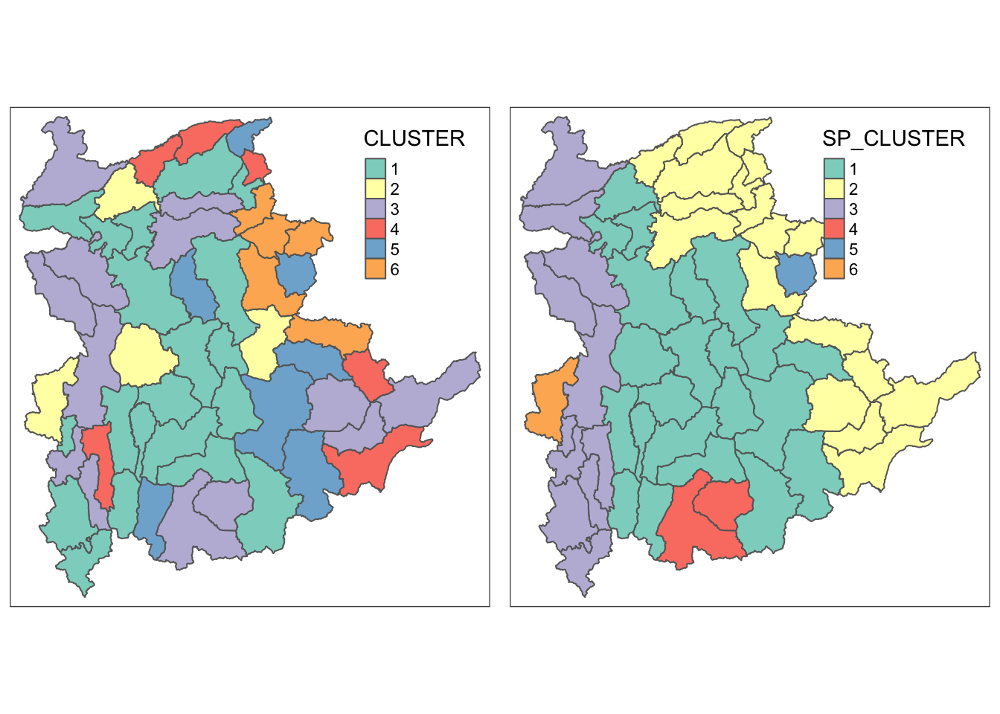

This hands-on exercise is a continuation of Hands-on Exercise 7, where the focus now will be on spatially constrained clustering analysis.
HX8.2 Loading R packages and preparing data
In this section, we will load the R packages and the data we need, which are the same as Hands-on Exercise 7. We will also replicate the steps from the earlier exercise to derive the penetration rate of various ICT device types.
pacman::p_load(spdep, tmap, sf, ClustGeo, ggpubr, cluster, factoextra, NbClust, heatmaply, corrplot, psych, tidyverse, GGally)# Retrieve joined DF as saved in exercise 7shan_sf <-read_rds("data/rds/shan_sf.rds")ict <-read_csv ("data/aspatial/Shan-ICT.csv")
Rows: 55 Columns: 11
── Column specification ────────────────────────────────────────────────────────
Delimiter: ","
chr (4): District Pcode, District Name, Township Pcode, Township Name
dbl (7): Total households, Radio, Television, Land line phone, Mobile phone,...
ℹ Use `spec()` to retrieve the full column specification for this data.
ℹ Specify the column types or set `show_col_types = FALSE` to quiet this message.
ict_derived <- ict %>%mutate(`RADIO_PR`=`Radio`/`Total households`*100) %>%mutate(`TV_PR`=`Television`/`Total households`*100) %>%mutate(`LLPHONE_PR`=`Land line phone`/`Total households`*100) %>%mutate(`MPHONE_PR`=`Mobile phone`/`Total households`*100) %>%mutate(`COMPUTER_PR`=`Computer`/`Total households`*100) %>%mutate(`INTERNET_PR`=`Internet at home`/`Total households`*100) %>%rename(`DT_PCODE`=`District Pcode`,`DT`=`District Name`,`TS_PCODE`=`Township Pcode`, `TS`=`Township Name`,`TT_HOUSEHOLDS`=`Total households`,`RADIO`=`Radio`, `TV`=`Television`, `LLPHONE`=`Land line phone`, `MPHONE`=`Mobile phone`,`COMPUTER`=`Computer`, `INTERNET`=`Internet at home`)summary(ict_derived)
DT_PCODE DT TS_PCODE TS
Length:55 Length:55 Length:55 Length:55
Class :character Class :character Class :character Class :character
Mode :character Mode :character Mode :character Mode :character
TT_HOUSEHOLDS RADIO TV LLPHONE
Min. : 3318 Min. : 115 Min. : 728 Min. : 20.0
1st Qu.: 8711 1st Qu.: 1260 1st Qu.: 3744 1st Qu.: 266.5
Median :13685 Median : 2497 Median : 6117 Median : 695.0
Mean :18369 Mean : 4487 Mean :10183 Mean : 929.9
3rd Qu.:23471 3rd Qu.: 6192 3rd Qu.:13906 3rd Qu.:1082.5
Max. :82604 Max. :30176 Max. :62388 Max. :6736.0
MPHONE COMPUTER INTERNET RADIO_PR
Min. : 150 Min. : 20.0 Min. : 8.0 Min. : 2.105
1st Qu.: 2037 1st Qu.: 121.0 1st Qu.: 88.0 1st Qu.:13.895
Median : 3559 Median : 244.0 Median : 316.0 Median :21.095
Mean : 6470 Mean : 575.5 Mean : 760.2 Mean :21.568
3rd Qu.: 7177 3rd Qu.: 507.0 3rd Qu.: 630.5 3rd Qu.:26.807
Max. :48461 Max. :6705.0 Max. :9746.0 Max. :48.452
TV_PR LLPHONE_PR MPHONE_PR COMPUTER_PR
Min. :11.60 Min. : 0.278 Min. : 3.642 Min. :0.3278
1st Qu.:45.02 1st Qu.: 2.284 1st Qu.:19.014 1st Qu.:1.1832
Median :51.72 Median : 3.759 Median :30.527 Median :1.8970
Mean :50.95 Mean : 5.109 Mean :31.405 Mean :2.4393
3rd Qu.:60.64 3rd Qu.: 6.972 3rd Qu.:42.843 3rd Qu.:2.9897
Max. :84.25 Max. :18.149 Max. :73.543 Max. :9.2402
INTERNET_PR
Min. : 0.1041
1st Qu.: 0.8617
Median : 2.2829
Mean : 3.0644
3rd Qu.: 4.1281
Max. :11.7985
HX8.2.1 Abridged EDA
As a recap, we will also draw the choropleth maps and correlation matrix from the last exercise.
This section serves to derive spatially constrained clusters using the skater() function from the spdep package. The SKATER (Spatial ’K’luster Analysis by Tree Edge Removal) method builds off a connectivity graph representing spatial relationships between neighbouring areas. In this graph, each area is represented by a node and each edge represents a connection between areas. The dissimilarity between neighbouring areas constitutes the edge costs, and we reduce the graph by pruning edges with higher dissimilarity, until we are left with a minimum spanning tree - that is, a tree with \(n\) nodes and \(n - 1\) edges. Any further pruning would create subgraphs, which become our cluster candidates.
HX8.3.1 Converting to SpatialPolygonsDataFrame
The skater() function only supports sp objects, such as the SpatialPolygonsDataFrame. Hence, we need to convert shan_sf as needed first.
shan_sp <-as_Spatial(shan_sf)
HX8.3.2 Computing Neighbour List
Next, poly2nd() from the spdep package will be used to compute the neighbours list from the polygon list.
shan.nb <-poly2nb(shan_sp)summary(shan.nb)
Neighbour list object:
Number of regions: 55
Number of nonzero links: 264
Percentage nonzero weights: 8.727273
Average number of links: 4.8
Link number distribution:
2 3 4 5 6 7 8 9
5 9 7 21 4 3 5 1
5 least connected regions:
3 5 7 9 47 with 2 links
1 most connected region:
8 with 9 links
We can plot the neighbour list on shan_sp by using the code chunk below. Since we now can plot the community area boundaries as well, we plot this graph on top of the map.
The first plot command gives the boundaries. This is followed by the plot of the neighbor list object, with coordinates applied to the original SpatialPolygonDataFrame (Shan state township boundaries) to extract the centroids of the polygons. These are used as the nodes for the graph representation. We can also specify add=TRUE to plot the network on top of the boundaries.
Note that if you plot the network first and then the boundaries, some areas will be clipped because the plotting area is determined by the characteristics of the first plot. In this example, because the boundary map extends further than the graph, we plot it first.
HX8.4 Creating connectivity graph
HX8.4.1 Calculating edge costs
nbcosts() of spdep is used to compute the cost of each edge.
# From exercise 7shan_ict <-read_rds('data/rds/shan_ict.rds')lcosts <-nbcosts(shan.nb, shan_ict)
For each observation, this gives the pairwise dissimilarity between its values on the five variables and the values for the neighbouring observation (from the neighbour list). Basically, this is the notion of a generalised weight for a spatial weights matrix.
Following that, we will incorporate these costs into a weights object in the same way as we did in the calculation of inverse of distance weights. In other words, we convert the neighbour list to a list weights object by specifying the just computed lcosts as the weights. In order to achieve this, nb2listw() of spdep package is used as shown in the code chunk below. Note that we have to specify the style as B to make sure the cost values are not row-standardised.
Characteristics of weights list object:
Neighbour list object:
Number of regions: 55
Number of nonzero links: 264
Percentage nonzero weights: 8.727273
Average number of links: 4.8
Link number distribution:
2 3 4 5 6 7 8 9
5 9 7 21 4 3 5 1
5 least connected regions:
3 5 7 9 47 with 2 links
1 most connected region:
8 with 9 links
Weights style: B
Weights constants summary:
n nn S0 S1 S2
B 55 3025 7626.765 582607.8 5220160
HX8.5 Computing minimum spanning tree
It is now time to create our minimum spanning tree. The tree is computed using the mstree() method of the spdep package.
shan.mst <-mstree(shan.w)# Check class of shan.mstclass(shan.mst)
[1] "mst" "matrix"
# Check dimensionsdim(shan.mst)
[1] 54 3
Note that the dimension is 54 and not 55. This is because the tree comprises \(n-1\)edges (links) in order to traverse all the nodes.
We can display the content of shan.mst by using head() as shown in the code chunk below.
We can also plot our tree to show the observation numbers of each node in addition to the edge. As before, we plot this together with the township boundaries. We can see how the initial neighbour list is simplified to just one edge connecting each of the nodes, while passing through all the nodes.
HX8.6 Computing spatially constrained clusters using SKATER method
We can now use the code chunk below to compute the spatially constrained clusters using skater() from spdep. skater() takes three mandatory arguments: the first two columns of the MST matrix (i.e. not the cost); the data matrix (to update the costs as units are being grouped), and; the number of cuts. The result of the skater() is an object of class skater, whose contents we can examine.
Note: The number of cuts is set to one less than the number of clusters. So, the value specified is not the number of clusters, but the number of cuts in the graph, one less than the number of clusters.
List of 8
$ groups : num [1:55] 1 1 6 1 1 1 1 1 1 1 ...
$ edges.groups:List of 6
..$ :List of 3
.. ..$ node: num [1:11] 2 6 8 1 4 7 36 9 10 46 ...
.. ..$ edge: num [1:10, 1:3] 6 1 8 4 7 36 6 9 10 8 ...
.. ..$ ssw : num 146
..$ :List of 3
.. ..$ node: num [1:18] 47 27 53 38 42 15 41 51 43 32 ...
.. ..$ edge: num [1:17, 1:3] 53 15 42 38 41 51 15 27 15 43 ...
.. ..$ ssw : num 376
..$ :List of 3
.. ..$ node: num [1:22] 13 48 54 55 45 37 34 16 25 52 ...
.. ..$ edge: num [1:21, 1:3] 48 55 54 37 34 16 45 25 13 13 ...
.. ..$ ssw : num 342
..$ :List of 3
.. ..$ node: num [1:2] 44 20
.. ..$ edge: num [1, 1:3] 44 20 9.5
.. ..$ ssw : num 9.5
..$ :List of 3
.. ..$ node: num 23
.. ..$ edge: num[0 , 1:3]
.. ..$ ssw : num 0
..$ :List of 3
.. ..$ node: num 3
.. ..$ edge: num[0 , 1:3]
.. ..$ ssw : num 0
$ not.prune : NULL
$ candidates : int [1:6] 1 2 3 4 5 6
$ ssto : num 1261
$ ssw : num [1:6] 1261 1098 996 954 912 ...
$ crit : num [1:2] 1 Inf
$ vec.crit : num [1:55] 1 1 1 1 1 1 1 1 1 1 ...
- attr(*, "class")= chr "skater"
The most interesting component of this list structure is the groups vector containing the labels of the cluster to which each observation belongs (as before, the label itself is arbitrary). This is followed by a detailed summary for each of the clusters in the edges.groups list. The sum of squares measures are given as ssto for the total and ssw to show the effect of each of the cuts on the overall criterion.
Given our clusters, we can print the cluster assignment, or use the table() function to find out the number of observations in each cluster. Parenthetially, we can also interpret the latter as the dimension of each vector in the lists contained in edges.groups. For example, the first list has node with dimension 12, corresponding to the number of observations in the first cluster.
Warning in segments(coords[id1, 1], coords[id1, 2], coords[id2, 1], coords[id2,
: "add" is not a graphical parameter
Warning in segments(coords[id1, 1], coords[id1, 2], coords[id2, 1], coords[id2,
: "add" is not a graphical parameter
Warning in segments(coords[id1, 1], coords[id1, 2], coords[id2, 1], coords[id2,
: "add" is not a graphical parameter
Warning in segments(coords[id1, 1], coords[id1, 2], coords[id2, 1], coords[id2,
: "add" is not a graphical parameter

HX8.7 Visualising clusters on choropleth map
We can now plot our newly derived clusters onto a map. For easy comparison, it will be better to place both the hierarchical clustering and spatially constrained hierarchical clustering maps next to each other.
groups_mat <-as.matrix(clust6$groups)# From exercise 7shan_sf_cluster <-read_rds('data/rds/shan_sf_cluster.rds')shan_sf_spatialcluster <-cbind(shan_sf_cluster, as.factor(groups_mat)) %>%rename(`SP_CLUSTER`=`as.factor.groups_mat.`)shclust.map <-qtm(shan_sf_spatialcluster, "SP_CLUSTER")# From exercise 7hclust.map <-read_rds('data/rds/hmap.rds')tmap_arrange(hclust.map, shclust.map,asp=NA, ncol=2)

There is significantly less fragmentation in our SKATER-derived clusters map, and one would notice how the clusters in the map correspond with the graph from earlier.
ClustGeo package is an R package specially designed to support the need of performing spatially constrained cluster analysis. More specifically, it provides a Ward-like hierarchical clustering algorithm called hclustgeo() including spatial/geographical constraints.
In the nutshell, the algorithm uses two dissimilarity matrices D0 and D1 along with a mixing parameter alpha, whereby the value of alpha must be a real number between [0, 1]. D0 can be non-Euclidean and the weights of the observations can be non-uniform. It gives the dissimilarities in the attribute/clustering variable space. D1, on the other hand, gives the dissimilarities in the constraint space. The criterion minimised at each stage is a convex combination of the homogeneity criterion calculated with D0 and the homogeneity criterion calculated with D1.
The idea is then to determine a value of alpha which increases the spatial contiguity without deteriorating too much the quality of the solution based on the variables of interest. This need is supported by a function called choicealpha().
HX8.8.2 Ward-like hierarchical clustering with ClustGeo
The ClustGeo package provides us with a function called hclustgeo() to perform Ward-like hierarchical clustering. To use this method to perform non-spatially-constrained hierarchical clustering, all we need to provide is a dissimilarity matrix - specifically, the one from Hands-on exercise 7.
# From hands-on exercise 7proxmat <-read_rds('data/rds/proxmat.rds')nongeo_cluster <-hclustgeo(proxmat)plot(nongeo_cluster, cex =0.5)rect.hclust(nongeo_cluster, k =6, border =2:5)
HX8.8.3.1 Mapping the clusters formed
The ClustGeo clusters can also be plotted onto a map as follows.
groups <-as.factor(cutree(nongeo_cluster, k=6))shan_sf_ngeo_cluster <-cbind(shan_sf, as.matrix(groups)) %>%rename(`CLUSTER`=`as.matrix.groups.`)qtm(shan_sf_ngeo_cluster, "CLUSTER")
Before performing spatially constrained hierarchical clustering, we need to first construct a spatial distance matrix using st_distance() from the sf package. Notice that as.dist() is used to convert the data frame into matrix.
We can use ggplot to plot the distribution of any clustering variable by cluster in a boxplot. In this example, we will plot the distribution of RADIO_PR.
ggplot(data = shan_sf_ngeo_cluster,aes(x = CLUSTER, y = RADIO_PR)) +geom_boxplot()
The boxplot reveals cluster 3 displays the highest radio penetration rate on average, followed by clusters 2, 1, 4, 6 and 5.
HX8.10.2 Multivariate visualisation
We can also choose to create multiple parallel coordinate plots, which have been shown to reveal clustering variables extremely effectively. In the below code chunk, parallel coordinate plots can be created by means of ggparcoord() from the GGally package.
ggparcoord(data = shan_sf_ngeo_cluster, columns =c(17:21), scale ="globalminmax",alphaLines =0.2,boxplot =TRUE, title ="Multiple Parallel Coordinates Plots of ICT Variables by Cluster") +facet_grid(~ CLUSTER) +theme(axis.text.x =element_text(angle =30))
The parallel coordinate plot above reveals that households in Cluster 4 townships have a higher rate of ICT device ownership, while those in cluster 5 have the lowest.
On the possible scale arguments for ggparcoor(), the course website notes:
Note that the scale argument of ggparcoor() provide several methods to scale the clustering variables. They are:
std: univariately, subtract mean and divide by standard deviation.
robust: univariately, subtract median and divide by median absolute deviation.
uniminmax: univariately, scale so the minimum of the variable is zero, and the maximum is one.
globalminmax: no scaling is done; the range of the graphs is defined by the global minimum and the global maximum.
center: use uniminmax to standardize vertical height, then center each variable at a value specified by the scaleSummary param.
centerObs: use uniminmax to standardize vertical height, then center each variable at the value of the observation specified by the centerObsID param
There is no one best scaling method to use. You should explore them and select the one that best meet your analysis need.
HX8.10.3 Printing summary statistics
The following code chunk creates a summarised table for us to print summary statistics per cluster.